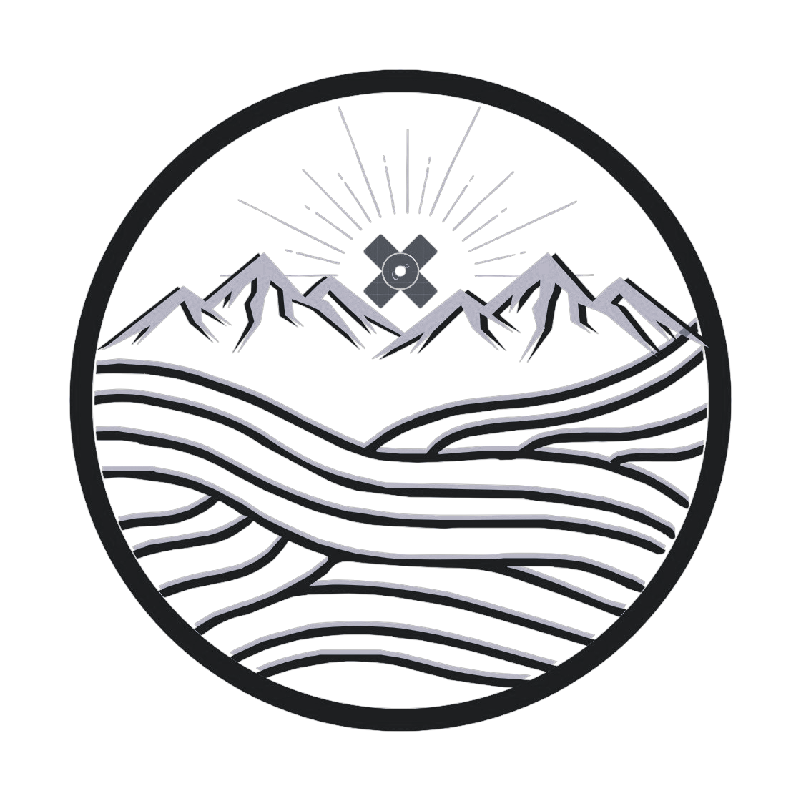

Desarrollamos soluciones innovadoras para la gestión sostenible del agua mediante tecnologías avanzadas. Nuestro sistema combina imágenes satelitales y análisis de datos para optimizar la construcción de tuberías, reducir pérdidas por fugas y garantizar un suministro eficiente en cualquier región promoviendo un medio sustentable por medio del principio de caudal ecologico.

Visualice información geográfica detallada con nuestro mapa satelital de alta resolución. Explore características del terreno, vegetación y recursos hídricos con datos actualizados.
Monitoree en tiempo real las condiciones ambientales, recursos hídricos y características del terreno con nuestro mapa interactivo de observación.
Utiliza nuestra herramienta integrada con ArcGIS para visualizar y analizar rutas de tuberías considerando elevación, tipo de terreno y distancia.
Seleccione puntos de inicio y fin, luego haga clic en "Calcular Ruta Óptima" para ver el análisis detallado. La ruta óptima se calcula utilizando algoritmos avanzados que consideran múltiples factores como topografía, tipo de suelo y costos de construcción.
Utilizamos la metodología de la FAO para determinar la distancia de irrigación necesaria para preservar el ecosistema, basado en parámetros climáticos, de suelo y vegetación.
Nuestra plataforma integra datos de múltiples fuentes satelitales para proporcionar información detallada sobre humedad del suelo, vegetación y topografía. Utilizamos imágenes de alta resolución combinadas con algoritmos de aprendizaje automático para detectar patrones y optimizar la planificación de infraestructura.